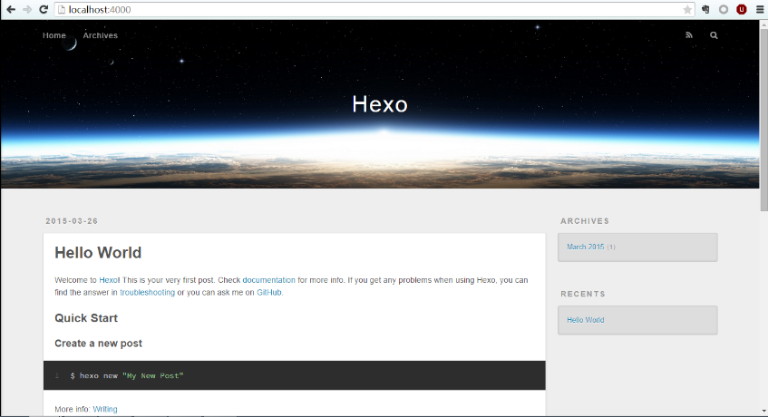

1. 原理
Github Pages：github是项目托管网站，列出了项目的源文件，所以github有一个pages功能，用来介绍你的项目目录，可以自定义主页，用来代替默认的列出源列表的这个页面。所以，Github Pages可以被认为是用户编写的、托管在github上的静态网页。
2. 搭建本地环境
首先需要搭建本地环境：Git + Node.js + Hexo + Typora，Typora是一款专门写markdown文件的编辑器，如果习惯用其他的编辑器写md，也可以。
操作系统：windows 7，其他系统安装方式类似。
安装顺序是先安装Git和Node.js，这两个安装完以后才能安装Hexo。
2.1 安装Git
官网下载Git安装包，安装路径自定义，有一个选项自动添加到环境变量的，要勾上。这里因为我之前就已经在用Git作为版本控制工具，所以就没有重新安装。
安装完成后，win+r 输入cmd打开命令行，输入git –version，返回所安装的Git的版本信息，说明安装成功。
2.2 安装Node.js
同样官网下载安装包，全部选择默认安装。
安装完成后，win+r 输入cmd打开命令行，输入node -v，返回所安装的node.js的版本信息，说明安装成功。
2.3 安装Hexo
安装Hexo建议照着官方文档来，网上的博客鉴于时间以及版本说法五花八门，按照官方文档来最为稳妥，而且这个是有中文官方文档的，不用担心看不懂。
在电脑磁盘上找一个你想存放博客相关文件的地方，新建文件夹Hexo_Blog，进入，右键Git Bush Here，即可在命令行中使用npm命令安装Hexo。
2.3.1 安装命令：
$ npm install -g hexo-cli
然后等待一会儿，等待时间跟你的网速有关。
2.3.2 初始化Hexo
安装 Hexo 完成后，请执行下列命令，Hexo 将会在指定文件夹中新建所需要的文件。
$ hexo init
$ npm install
然后等待安装结束。结束后会生成一些配置文件，具体信息参考官方文档，很详细。
2.3.3 体验Hexo
同样是在命令行中，输入：
$ hexo g
$ hexo s
提示：
INFO Hexo is running at http://localhost:4000 . Press Ctrl+C to stop.
说明建站成功，博客网站已经成功在本地建立起来啦！
在浏览器中打开http://localhost:4000/，你将会看到：

一片美丽的星空！！！
说明建站成功，主题有点丑，所以我们后边会换主题。